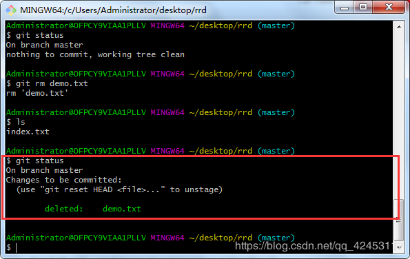

如果你用过Word文档写过文章，那么你一定会有这样的经历。
我觉得某一段或者某一句写得不够好，但是，删掉之后我可能会后悔把它删掉了，进而又想把删掉的段落找回来，这时，你想到了一个好办法，将每次的修改都作为一个文章版本保存起来，这样虽然能够解决你的问题。但是，随着你的修改次数越来越多，你会发现，电脑桌面上出现了N多个Word副本，这时，你已无法分清每个副本对应的是什么时候作的修改。
于是你想，如果有一个软件，不但能自动帮我记录每次文件的修改，还可以让同事协作编辑，这样就不用自己管理一堆类似的文件了，也不需要把文件传来传去。如果想查看某次改动，只需要在软件里瞄一眼就可以，岂不是很方便？
既然有这样的想法，那么你就应该学习一下git。
那什么是git？
git是目前世界上最先进的分布式版本控制系统。
既然是最先进的，我们当然是要去学好它，掌握好它了。
那么，从该篇博客开始，我将记录git教程系列，作为学习资料提供给大家。
我们先说一个故事吧。
很多人都知道，Linus在1991年创建了开源的Linux，从此，Linux系统不断发展，已经成为最大的服务器系统软件了。
Linus虽然创建了Linux，但Linux的壮大是靠全世界热心的志愿者参与的，这么多人在世界各地为Linux编写代码，那Linux的代码是如何管理的呢？
事实是，在2002年以前，世界各地的志愿者把源代码文件通过diff的方式发给Linus，然后由Linus本人通过手工方式合并代码！
你也许会想，为什么Linus不把Linux代码放到版本控制系统里呢？不是有CVS、SVN这些免费的版本控制系统吗？因为Linus坚定地反对CVS和SVN，这些集中式的版本控制系统不但速度慢，而且必须联网才能使用。有一些商用的版本控制系统，虽然比CVS、SVN好用，但那是付费的，和Linux的开源精神不符。
不过，到了2002年，Linux系统已经发展了十年了，代码库之大让Linus很难继续通过手工方式管理了，社区的弟兄们也对这种方式表达了强烈不满，于是Linus选择了一个商业的版本控制系统BitKeeper，BitKeeper的东家BitMover公司出于人道主义精神，授权Linux社区免费使用这个版本控制系统。
安定团结的大好局面在2005年就被打破了，原因是Linux社区牛人聚集，不免沾染了一些梁山好汉的江湖习气。开发Samba的Andrew试图破解BitKeeper的协议（这么干的其实也不只他一个），被BitMover公司发现了（监控工作做得不错！），于是BitMover公司怒了，要收回Linux社区的免费使用权。
Linus可以向BitMover公司道个歉，保证以后严格管教弟兄们，嗯，这是不可能的。实际情况是这样的：
Linus花了两周时间自己用C写了一个分布式版本控制系统，这就是Git！一个月之内，Linux系统的源码已经由Git管理了！
Git迅速成为最流行的分布式版本控制系统，尤其是2008年，GitHub网站上线了，它为开源项目免费提供Git存储，无数开源项目开始迁移至GitHub，包括jQuery，PHP，Ruby等等。
历史就是这么偶然，如果不是当年BitMover公司威胁Linux社区，可能现在我们就没有免费而超级好用的Git了。
这就是git的诞生史了。
那首先我们来讲一下安装。
git在Linux、Mac、Win下都可以安装。
因为大家普遍都是Windows操作系统，我就以Windows环境为例。
在Windows环境下，我们只需访问https://git-for-windows.github.io网址，即可下载git，然后一路next，安装就完成了。
安装完成后，我们点击开始菜单，找到git，然后打开。
这样就说明git安装成功了。
人在江湖，岂能没有名号，在你使用git之前，要先报家门，否则代码不能提交。
$ git config --global user.name #你是谁
$ git config --global user.email #怎么联系你
因为我已经提交过我的用户名和邮箱了，所以，我这里打印了我的信息。从这里我们知道，这个设置用户名和邮箱的指令同时也是查看信息的指令吧。
那么接下来通过一次版本提交我们来感受一下，git操作其实没有什么可说的，重要的是要记住git指令及其每条指令的含义。
我们把路径切换到桌面
cd Desktop然后在桌面新建一个文件夹，该文件夹就是我们的工作目录
mkdir rrd然后切换到工作目录
cd rrd我们在工作目录中初始化一个代码仓库
git init有了代码仓库之后，我们就可以在工作目录进行工作了。
在目录中创建一个index.txt文件，并编写hello git内容。
cat >> index.txt输入cat指令创建文件回车后，会等待你输入文件内容，输完ctrl+d保存退出。
我们输入
hello git然后，我们查看一下工作状态
git status
红色框线内的意思是说提交时除了未跟踪的文件之外没有添加任何内容(使用“git add”进行跟踪)。
说明我们的index.txt文件并没有被git跟踪，我们使用git add对文件进行跟踪。
git add index.txt该条指令可以对index.txt进行跟踪，但是，文件如果非常多，这样写显然就很繁琐了，所以，我们可以使用
git add .将当前目录的所有文件进行跟踪。
然后，我们将该文件提交到代码仓库。
git commit -m "提交"-m是注释的意思，引号内写明你对此次提交的注释信息。
到这里，我们就完成了一次版本管理。
注意，在git中有一个暂存区的概念，可以先不用知道暂存区是什么，你只需要知道，我们add文件之后，文件是会先放在暂存区，此时文件并没有被提交，所以你可以随时撤回你放入暂存区的文件，当你commit之后，文件才会从暂存区被提交到代码仓库。
我们现在对文件进行修改
vi index.txt然后输入i、o或者a都可以进入vim的编辑模式，进入编辑模式后，对文件内容进行一些简单的修改，然后按esc退出编辑模式，进入命令模式，此时，输入 :q! 即可退出编辑器，但是修改不保存，输入 :wq 即可保存内容并退出，然后输入
git status
git会提示你的工作区内容被修改了，这时我们输入
git add .
git commit -m "再次提交"我们的修改就会被同步到我们的代码仓库中。
接下来演示一下删除。
我们再次创建一个文件并将其提交到代码仓库，这个相信已经难不倒你们了，我直接贴出所有步骤。
cat >> demo.txt
git add .
git commit -m"第三次提交"此时我们输入git status查看一下状态。
工作区是空的，说明我们的工作区和代码仓库已经同步了。
然后，我们把刚才创建的文件进行删除。
git rm demo.txt再次输入git status查看状态。

此时git就发现我们删除了文件，注意，现在如果想将工作区与代码仓库进行同步，不需要add了，而是直接输入
git commit -m "第四次提交"这样，代码仓库的demo.txt文件也就被删除了。
如果你自己手动删除文件，你是需要进行add操作的，但是，如果你使用git rm命令进行文件删除，git会帮助你直接把操作放入暂存区，所以，你可以直接提交你的删除操作。